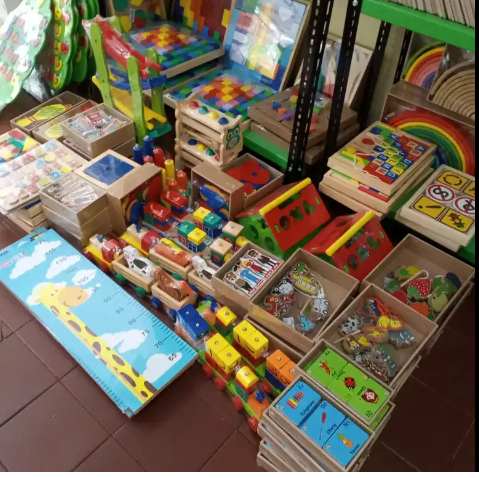
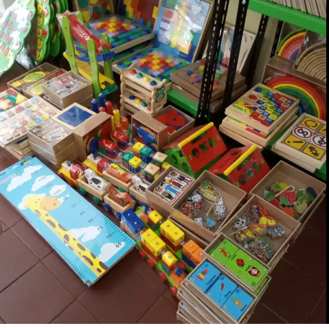

PAUD(Pendidikan Anak Usia Dini) merupakan jenjang pendidikan yang menaungi Taman Kanak Kanak(TK), Kelompok Bermain(KB), Satuan PAUD Sejahera(SPS), dan Tempat Penitipan Anak(TPA), namun banyak oran tua yang masih bingung tentang perbedaan PAUD dan TK.Lembaga pendidikan PAUD yang berupa kelompok bermain seperti ini biasanya diikuti oleh anak-anak biasanya berusia 2-4 tahun. Sedangkan, Taman Kanak Kanak biasanya diikuti oleh anak 4-6 tahun.

.png)


 

| No. | PENILAIAN | NILAI = 0 | NILAI = 1 | NILAI = 2 | ANGKA |
|---|---|---|---|---|---|
| A | Appearance Color Warna Kulit | Pucat | Badan Merah Ekstremitas Biru | Seleruh Tubuh Kemerah-Merahan | |
| P | Pulse (Heart) Frekuensi Jantung | Tidak Ada | Kurang Dari 100 | Lebih Dari 100 | |
| G | Grimace Reaksi Terhadap Rangsangan | Tidak Ada | Sedikit Gerakan Mimic (Grimace) | Menangis Aktif, Batuk, bersin | A | Activity Tonus Otot | Tidak Ada | Ekstremitas Dalam Sedikit Fleksi | Gerakan Aktif |
| R | Respiration Usaha Bernafas | Tidak Ada | Lemah/Tidak Teratur | Baik, Menangis |